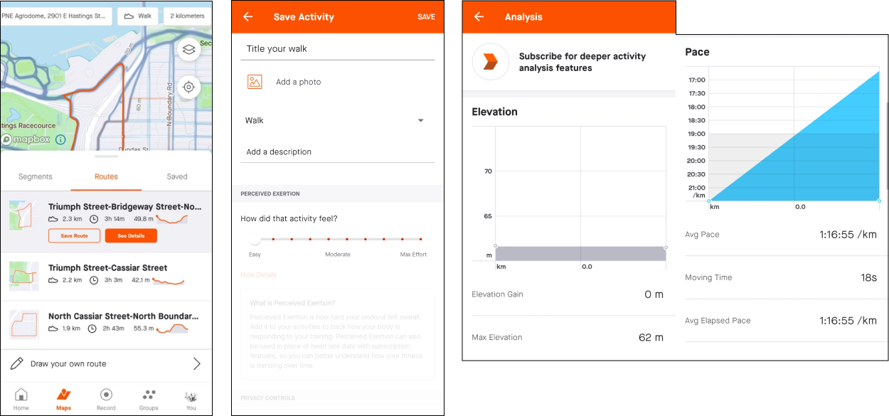
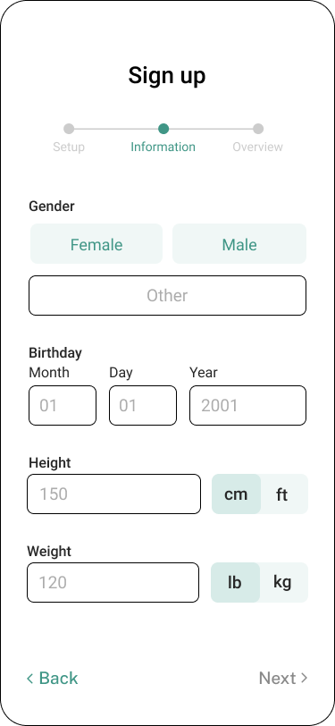
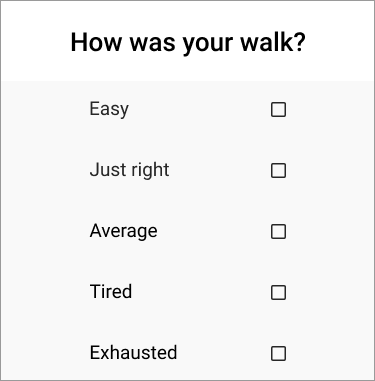

Helping users understand their physical capabilities through a health tracking application.
Contribution
Interface design
Exploratory research
Prototyping
Team
Angela Lee
Catelyn Sue
Sophia Wang
Type & Time
School project
(2 Months
Jul - Aug 2021)
Tools
Figma
Miro
Overview
Introduction
A 2 month school project that is separated into two parts: research and design. The design process first examines a relevant problem through research then focuses on creating an easy-to-use and accessible solution that can help our users mitigate the problem.
Problem
Many seniors (age 75 and above) lack physical awareness and do not understand their physical capacity to be active thus pushing themselves too hard and causing unexpected injuries or falls.
Research
Inspiration
As people return to their normal activities from pre-covid times, my team and I were specifically curious about seniors and their experience re-engaging with different activities. Since many of our family and friends faced difficulty maintaining physical exercise during the pandemic, we wondered if seniors also encountered similiar struggles.
This spark helped to determine our research domain: Mobility and Movement
Affinity Map
Goal
Determine a problem area to focus on.
Key Observations
Using our research on Mobility and Movement, we compiled all our data on Miro to observe the different topics within our domain.
Using Nielsen Norman's severity rating, our group narrowed down to two problem areas: Dependence and Physical Awarness. Ultimately we chose to focus on physical awarness because we had stronger supporting evidence from interviews and primary sources.
The sticky notes are thoughts, ideas, and notes from our research and the red pentagon in the corner is the sum of our severity ratings (rectangle, star, and circle) for this topic.
With a defined topic area, we created two 'How Might We' to guide us through further research.
Design Space
How might we help seniors stay within their physical limits and set realistic expectations?
How might we cater the appropriate exercises for seniors to feel confident?
Existing Applications
Goal
Discover how applications help users understand and stay within their physical limits.
Analysis
Free main features:
MapMyWalk:Tracks activities and suggests workouts
MyFitnessPal:Tracks meals and workouts
Strava:Tracks activities, suggests workouts and routes
#1 MapMyWalk
Understanding and staying within physical limits through:
Customizable workout plans
Creating own goals
Audio guidance training
Key Observations
Two features that caught my attention was the Heart Rate Analysis and Audio Coaching. Unlike younger athletes who focus on performance based goals, seniors are different in that they priorities capability and safey. With data on heart rate, seniors are able to determine the appropriate level intensity. Similiarly, live audio guidance can help them understand their physical state during an exercise.
#2 My FitnessPal
Understanding and staying within physical limits through:
Personal workout routine with reps, sets, and weights
Exercise to calorie conversion
Tailored guidance and coaching (premium only)
Key Features
My FitnessPal it best for logging personal progress and providing qualitative data. Not only does it record start and current physical state, but also tracks the changes and numbers to achieve user goals.
#3 Strava

Understanding and staying within physical limits through:
Suggested routes
Post activity inputs
Indepth activity analysis
Key Features
Although the sign up process is similiar in most applications, Strava users can also sync their tracking devices, allowing for more accurate data and catered feedback for the user. In addition, Strava includes surface condition that can be important information to user who have mobility difficulties.
Currently, existing solutions focus more on progress tracking (km/h, pace, steps, or distance travelled, time elapsed) than helping users understand what level/intensity of exercise is within their safe zone.
Design Ideas
After observing existing applications and their features, each of our team members brainstormed two new ideas that can help solve the user's problem.
Top Ideas
#1 Ability to connect with existing health monitor applications
#2 Specific health and exercise related questions post workout
#3 Logging workout via BPM (Beats per minute) with difference colours
#4 Notify users to rest when their heart rate increases pass a safe zone
First Draft
With our key features in mind, we proceeded to creating our first set of designs.
Design Revisions
From the first draft, we completed two more with minor tweaks in colour, layout and content. Once we finised our final design and working prototype, we completed two different tests to evaluate important issues.
Test #1: Heuristics Evaluation
Using Jakob Nielsen's 10 usability heuristics for user interface design (https://www.nngroup.com/articles/ten-usability-heuristics/), we discovered that the heuristic we neglected most throughout the application was helping users recognize, diagnose, and recover from errors.
An example of this issue occuring is in the Sign-up process where the user clicks on the 'next' button. Without completing all of the fields, the interface does not generate change nor does it notify the user of the error (figure 1). The inability to help users recognize errors can cause fustrations to those who do not understand the reason of why they cannot continue to the next step.
A simple fix was to add a red border over unselected buttons or incomplete fields with an error message below to inform the user of the problem (figure 2).

figure 1figure 2
Test #2: User Testing
Due to the absence of an iPhone 11 and the imprecise aspect ratios on an alternative mobile device, testing was conducted on laptop.
Prominent Issues
Through our testings we learned that seniors paid more attention to content and instructions rather than the visual cues.
Font size below 14
Font size in surveyRevised font size in survey
Low contrast colours
Old input: dark grey against light greyRevised input: white against light grey
Inaccurate survey options

OldRevised options from low to high range
Jargon
OldRevised word choices
Others
Progress bar
Element hierarchy
Radio buttons
In our final prototype we ensured that the language and instructions were clear, yet enough to maintain a simple-to-read interface.
Solution Breakdown
Application
Trackling fitness support app that utilizes user’s health data from in-app logged activity together with synced health applications to provide personalized workouts, notifications and visualized progress tracking . Trackling also logs users’ activity progress through performance metrics such as distance travelled, average moving pace during an activity, elevation gain on the route, and total time elapsed for an activity.
Goal
Notify users when they are exceeding their physical limits based on the safe thresholds of their active heart rate in beats per minute (BPM) and age group, for low, moderate, and high intensity activities.
Design Considerations
To create an accessible application suitable for seniors , the design considerations include high contrast colour combinations, larger standard font, and formal language understood by our users.
User Persona
Sam, a 75 year old grandmother, has just began to exercise after staying at home for 3 months. She is excited to go on walks around the neighbourhood but is afraid of exceeding her physical capabilities and causing injuries.
User Flow
Task: Sam goes on a walk
Onboarding
Health Application Data Sync
As Sam enters Trackling, she is brought to the Sign Up page where personal information is requested. Not only is she able to input her information manually, but she can also sync health data from other applications to create a more seamless and personalized health tracking experience using exisiting information.
Navigation Page
Activity Routes
On the landing home page,
Sam can access the Workout page through the suggested workouts section. Here, she is given the option of choosing a walking route within their vicinity or building her own route.
Each option provides Sam with the distance, estimated time, elevation gain, as well as cautions that Sam might need to consider such as gravel or uneven surfaces.
Workout Recorder
Real-Time Health Report
On the walk, Sam is provided with real-time notifications that is dependent of her 'zone'. These 'zone' associate with Sam's heart rate and appears on top of the display:
Green: heart rate under 102
Yellow: heart rate under 128
Red: heart rate above 128.
If Sam enters the yellow zone, the system will simply send a notification and in the red zone, the notification will also include audio and haptic alerts to notify Sam to take a break until her BPM reaches the same zone.
While Sam is taking a break, She can visually watch her zones and heart rate change.
Post Workout
Activity Survey
Once Sam has completed her workout, Trackling prompts a post workout survey to understand her emotions and physical state.
Question #1: "How are you feeling"
Question #2: "How was your walk"
Question #3: If Q2 was...
Effortless/ Easy -> Option of another workout
Okay -> Back to home screen
Hard/ Extreme -> Reason of difficulty is inquired
The post activity survey is an important component of our application as it allows Trackling to extract information and recommend workouts that are catered to the users physical ability and limits.
Unlike the other group projects I have completed in the past where each team member had a specific role or skill they excelled at, this time I look on a leadership role where I helped position the group in the right direction during the initial stages of the design process and later overlooked the whole project while focusing on my own individual tasks.
If I had more time, I would also look into usability as a whole including the mobile device itself and whether the features on the application are feasible while a user is active and exercising.